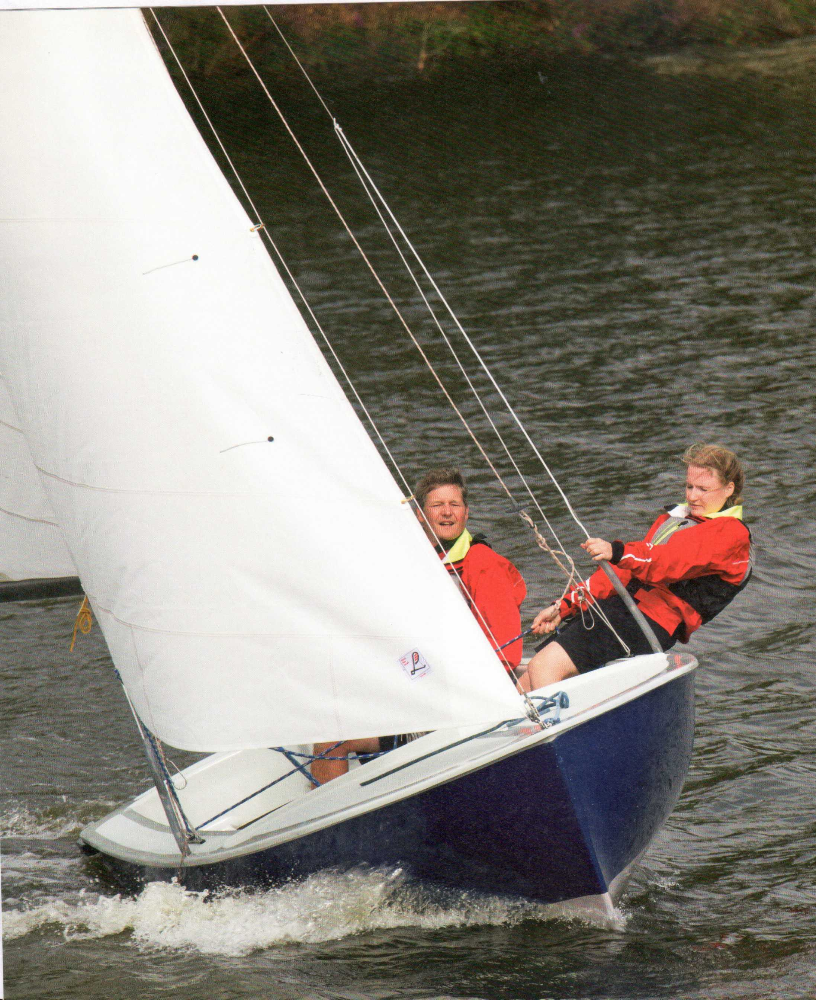

Heinz Overschmidt
Raman Gliewe
Sportboot-führerschein Binnen Segel Motor
Mit offiziellen Prüfungsfragen und -antworten
Delius Kiasing Verlag
Zu den Autoren:
Heinz Overschmidt: Der ehemalige Präsident des Verbandes Deutscher Segelschulen und Gründerderältesten noch heute bestehenden privaten Segelschule Deutschlands verfasste mit diesem Buch das Standardwerk für die Theorieausbildung im deutschsprachigen Raum.
Ramon Gliewe: Der ehemalige Chefredakteur und Herausgeber der Zeitschrift BOOTE gestaltete ab Juni 1980 Konzept und Text und betreute und bearbeitete das Werk bis zum Jahr 2012.
Außerdem sind von Heinz Overschmidt und Ramon Gliewe im Delius Kiasing Verlag erschienen:
Das Bodenseeschifferpatent A+D
Ich lerne segeln
Sportbootführerschein Binnen - Motor
Bibliografische Information der Deutschen Nationalbibliothek Die Deutsche Nationalbibliothek verzeichnet diese Publikation in der Deutschen Nationalbibliografie; detaillierte bibliografische Daten sind im Internet über http://dnb.dnb.de abrufbar.
17., überarbeitete Auflage
ISBN 978-3-667-10327-7
© Delius Kiasing 8 Co. KG, Bielefeld
Redaktionelle Bearbeitung: Peter Overschmidt
Lektorat: Felix Wagner
Fotos: Seite 36: Jean-Marie Tronquet; Seite 110: Michael Häfner;
Seite 125 oben: Suzuki Marine; alle übrigen: Klaus Andrews
Einbandgestaltung: Buchholz.Graphiker, Hamburg
Layout: Gabriele Engel
Zeichnungen: Karin Kemner; Inch3, Bielefeld
Lithografie: digital I data I medien, Bad Oeynhausen
Gesamtherstellung: Kunst- und Werbedruck, Bad Oeynhausen
Printed in Germany 2017
Unter Mitwirkung der Yachtschule Overschmidt; Aasee, Münster.
Alle Rechte vorbehalten! Ohne ausdrückliche Erlaubnis des Verlages darf das Werk weder komplett noch teilweise reproduziert, übertragen oder kopiert werden, wie z. B. manuell oder mithilfe elektronischer und mechanischer Systeme einschließlich Fotokopieren, Bandaufzeichnung und Datenspeicherung.
Delius Kiasing Verlag, Siekerwall 21, D-33602 Bielefeld Tel.: 0521/559-0, Fax: 0521/559-115
E-Mail: info@delius-klasing.de • www.delius-klasing.de